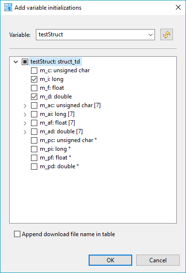

void initStructT(struct_td * pStruct, long value);
we need the following local variable:
The two buttons between the tables can save us some typing. The first one copies all declared test local variables to the initialization table. The second one opens a wizard dialog, which helps us to add all array or structure members to the initialization table with few clicks:

Note, that we have to initialize each structure or array member separately.
Now we can use the declared and initialized variables as function parameters:
Declaration:
myChar char[10]
Initialization:
myChar "Hello!"
For number arrays we can use curly braces, for example:
Declaration:
myArray int[10]
Initialization:
myArray {10, 20, 30, 40, 50, 60, 70, 80, 90, 100}
void f(int *p);
and we declare variable:
param1 int *
and then 'initialize' it like:
*param1 10 // DON'T DO THIS!!!
then param1 will contain uninitialized address, depending on
previous stack content. Symptoms: test will sometimes succeed,
sometimes fail with error. Proper approach:Declaration:
param1 int
Initialization:
param1 10
Function parameter:
¶m1
iCounter is initialized to
value 10:
Global and function static variables keep their values between test runs - if a test changes value of the global variable, the next test will be executed with the changed value.
Warning: If we define type of a variable, it means a declaration of a local variable. If it has the same name as a global variable, the global variable is hidden!
"<moduleName>#"<varName>,,<downloadFileName>
where:
moduleName - name of the C source file, which
contains the variable (optional)varName - name of the variabledownloadFileName - name of the download file, where the variable is located
"main.c#"iCounter,,executable.elf
iCounter,,executable.elf
When we use such variable in expressions, the download file name
is valid for whole expression, so we have to specify it at the
end of expression, for example:
iCounter == 3,,executable.elf
<functionName>##<functionStaticVarName>
where:
functionName - name of the function, which
contains static variablefunctionStaticVarName - name of the static
variable inside the function
myFunction##myStaticVar
decltype(<functionName>##<N>)
decltype(*<functionName>##<N>)[]
decltype_ref(<functionName>##<N>)
where:
Examples:
void myFunction(MyStruct a)we can use the following type instead of type
MyStruct:
decltype(myFunction##1)
otherFunction(MyType *ptr)and we want to create an array of 5 elements of type
MyType to
be used as a pointer parameter, we can write:
decltype(*myFunction##1)[5]Note that type of the first function parameter is
MyType
*. We have to dereference it to get
type MyType.
void f(int n1, int * pn2, int & rn3)we can get parameter types using one of the following:
| Syntax | Returned type | Description |
|---|---|---|
| decltype(f##1) | int | type of 1st parameter (n1) |
| decltype(f##2) | int * | type of 2nd parameter (pn2) |
| decltype(*f##2) | int | type of pointer |
| decltype(*f##2)[3] | int[3] | declares array to be used as the first parameter |
| decltype(f##3) | int & | type of param3 (rn3) |
| decltype_ref(f##3) | int | referenced type of param3 (rn3) |
Option Optimize type information checks some information before merging types, but sometimes this information is not available and merging is not performed. On the other hand, option Merge Types merges types if they have the same name. This setting should always solve the problem of type merging for equal types, but it will cause problems if you have types with the same name, but are actually different. When using this option, it is your responsibility to be sure about declarations of types used.